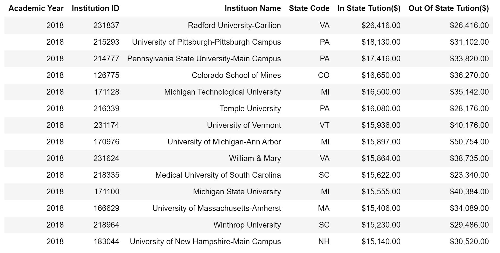

Public college tuition cost¶
This visual generate the list of the public institutions having the highest in-state tuition for the selected year. The result is displayed in HTML table format.
pip install snowflake-connector-python==2.3.6 > /dev/null
#read required information to connect to Snowflake database
from getpass import getpass
accountName = getpass('Enter Snowflake account name:')
userName = getpass('Enter Snowflake user name:')
password = getpass('Enter Snowflake password:')
databaseName = 'ipeds' #@param {type:"string"}
sourceSchema='Public'#@param {type:"string"}
warehouseName = 'COMPUTE_WH'#@param{type:"string"}
Enter Snowflake account name:··········
Enter Snowflake user name:··········
Enter Snowflake password:··········
# Source System to gather Statistics from
import snowflake.connector
import pandas as pd
from __future__ import print_function
from ipywidgets import interactive
import ipywidgets as widgets
# Gets the version
ctx = snowflake.connector.connect(
user=userName,
password=password,
account=accountName,
database=databaseName,
warehouse=warehouseName
)
cs = ctx.cursor()
try:
sql = """
WITH CTE_Tution AS
(
SELECT
A.ACADEMICYEAR
,A.INSTITUTIONIDENTIFIER AS ID
,B.INSTITUTIONNAME AS NAME
,B.STATE
,SUM(A.INSTATEAVERAGETUITIONFULLTIMEUNDERGRADUATES)
AS InStateTution
,SUM(A.OUTOFSTATEAVERAGETUITIONFULLTIMEUNDERGRADUATES)
AS OutOfStateTution
,ROW_NUMBER() OVER (PARTITION BY A.ACADEMICYEAR \
ORDER BY InStateTution DESC) AS MaxFeeCounter
FROM INSTITUTIONALCHARGE A
INNER JOIN ACADEMICINSTITUTION B
ON A.INSTITUTIONIDENTIFIER = B.INSTITUTIONIDENTIFIER
INNER JOIN INSTITUTIONCONTROL ICTR
ON ICTR.CODE = B.CONTROLOFINSTITUTION
WHERE UPPER(ICTR.DESCRIPTION) LIKE '%PUBLIC%'
AND B.DEGREEGRANTINGSTATUS = 1
GROUP BY A.ACADEMICYEAR,ID,NAME,B.STATE
)
SELECT ACADEMICYEAR,
ID AS "Institution ID",
NAME "Instituon Name",
STATE "State Code",
InStateTution AS "In State Tuition($)",
OutOfStateTution "Out Of State Tuition($)" ,
MaxFeeCounter "in-state-tution_index"
FROM CTE_Tution ;
"""
#print (sql)
cs.execute(sql)
records = cs.fetchall()
names = [x[0] for x in cs.description]
df1 = pd.DataFrame(records,columns = names)
finally:
cs.close()
ctx.close()
# Select the year for report
def f(Year):
return Year
w = interactive(f,Year = df1.ACADEMICYEAR .unique());
display(w);
#Select number of institute to be displayed
slider=widgets.IntSlider(
min=10,
max=40,
step=2,
description='Number of Institutiuons to be displayed \
on the report ',
value=3
)
display(slider)
# Add formatting to dataset
import warnings
warnings.filterwarnings('ignore')
dfFilter = df1[df1.ACADEMICYEAR.eq(w.result)]
pd.options.display.float_format = '${:,.2f}'.format
dfFilter['In State Tuition($)'] = dfFilter['In State \
Tuition($)'].astype(float)
dfFilter['Out Of State Tuition($)'] = dfFilter['Out Of \
State Tuition($)'].astype(float)
#print(dfFilter)
# Apply fiter and display the results
topn=slider.value
dfFilter=dfFilter.nlargest(topn,'In State Tuition($)')
dfFilter=dfFilter.drop(columns=['in-state-tution_index'])
dfFilter = dfFilter.rename(columns = \
{"ACADEMICYEAR":"Academic Year"})
from IPython.display import HTML
HTML(dfFilter.to_html(index=False))
Output:
